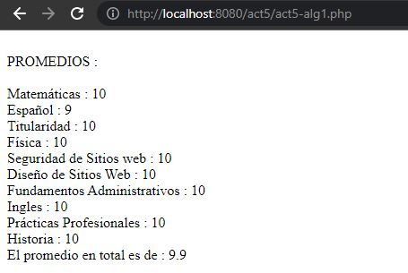

Los alumnos de sitios de internet se encargar de aprender a desarrollar sitios web, entre ellas podemos encontrar los formularios:
Los alumnos de sitios de internet se encargar de aprender a desarrollar sitios web, entre ellas podemos encontrar los formularios:
Este semestre los alumnos de la Preparatoria Politécnica sean concentrado
en aprender el lenguaje de progracion de PHP el cual es usado
para desarrollar el backend de una página web.
Uno de los trabajos realizados es:
Este formulario esta conectado a HTML.
El siguiente trabajo realizado es un programa que tiene 10 calificaciones en la cual se pide que se implementen 10 calificiones para poder sacar el promedio.
Otro de los trabajos realizados durante este semestre es el uso de la función Rand la cual nos permite generar números aleatorios, tal y como se muestra a continuación:
Por ultimo, un lenguaje de progración que se esta viendo es CSS el cual nos ayuda a decorar nuestras páginas web, en el siguiente ejercicio se ve como es que se aplico el uso del CSS en una actividad.